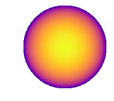

Note
This tutorial was generated from an Jupyter notebook that can be downloaded here.
Rotation matrix for spherical harmonics¶
Code to compute and validate the rotation matrix for spherical harmonics¶
We begin by importing some stuff and defining our functions:
[37]:
import numpy as np
from IPython.display import display, Math
import sympy
from sympy import *
from sympy.functions.special.tensor_functions import KroneckerDelta
import starry
import matplotlib
%matplotlib inline
# Initialize the session
init_session(quiet=True)
# I am using the dev version of sympy
print("Using sympy version", sympy.__version__)
# Define our symbols
l, m, n, alpha, beta, gamma, u1, u2, u3, theta = symbols('l m n alpha beta gamma u1 u2 u3 theta')
Using sympy version 1.1.2.dev
[2]:
def Dmn(l, m, n, alpha, beta, gamma):
"""Compute the (m, n) term of the Wigner D matrix."""
sumterm = 0
# Expression diverges when beta = 0
if beta == 0:
beta = 1e-16
for k in range(l + m + 1):
sumterm += (-1) ** k * cos(beta / 2) ** (2 * l + m - n - 2 * k) * \
sin(beta / 2) ** (-m + n + 2 * k) / \
(factorial(k) * factorial(l + m - k) * factorial(l - n - k) * factorial(n - m + k))
return sumterm * exp(-I * (alpha * n + gamma * m)) * (-1) ** (n + m) * \
sqrt(factorial(l - m) * factorial(l + m) * factorial(l - n) * factorial(l + n))
[3]:
def D(l, alpha, beta, gamma):
"""Compute the Wigner D matrix."""
res = zeros(2 * l + 1, 2 * l + 1)
for m in range(-l, l + 1):
for n in range(-l, l + 1):
res[m + l, n + l] = Dmn(l, m, n, alpha, beta, gamma)
return res
# Print it for l = 1
D(1, alpha, beta, gamma)
[3]:
$$\left[\begin{matrix}1.0 e^{- i \left(- \alpha - \gamma\right)} \cos^{2}{\left (\frac{\beta}{2} \right )} & - 1.0 \sqrt{2} e^{i \gamma} \sin{\left (\frac{\beta}{2} \right )} \cos{\left (\frac{\beta}{2} \right )} & e^{- i \left(\alpha - \gamma\right)} \sin^{2}{\left (\frac{\beta}{2} \right )}\\1.0 \sqrt{2} e^{i \alpha} \sin{\left (\frac{\beta}{2} \right )} \cos{\left (\frac{\beta}{2} \right )} & - \sin^{2}{\left (\frac{\beta}{2} \right )} + \cos^{2}{\left (\frac{\beta}{2} \right )} & - \sqrt{2} e^{- i \alpha} \sin{\left (\frac{\beta}{2} \right )} \cos{\left (\frac{\beta}{2} \right )}\\e^{- i \left(- \alpha + \gamma\right)} \sin^{2}{\left (\frac{\beta}{2} \right )} & \sqrt{2} e^{- i \gamma} \sin{\left (\frac{\beta}{2} \right )} \cos{\left (\frac{\beta}{2} \right )} & e^{- i \left(\alpha + \gamma\right)} \cos^{2}{\left (\frac{\beta}{2} \right )}\end{matrix}\right]$$
[4]:
def Umn(l, m, n):
"""Compute the (m, n) term of the transformation matrix from complex to real Ylms."""
if n < 0:
term1 = I
elif n == 0:
term1 = sqrt(2) / 2
else:
term1 = 1
if (m > 0) and (n < 0) and (n % 2 == 0):
term2 = -1
elif (m > 0) and (n > 0) and (n % 2 != 0):
term2 = -1
else:
term2 = 1
return term1 * term2 * 1 / sqrt(2) * (KroneckerDelta(m, n) + KroneckerDelta(m, -n))
[5]:
def U(l):
"""Compute the U transformation matrix."""
res = zeros(2 * l + 1, 2 * l + 1)
for m in range(-l, l + 1):
for n in range(-l, l + 1):
res[m + l, n+ l] = Umn(l, m, n)
return res
# Print it for l = 1
U(1)
[5]:
$$\left[\begin{matrix}\frac{\sqrt{2} i}{2} & 0 & \frac{\sqrt{2}}{2}\\0 & 1 & 0\\\frac{\sqrt{2} i}{2} & 0 & - \frac{\sqrt{2}}{2}\end{matrix}\right]$$
[6]:
def REuler(l, alpha, beta, gamma):
"""Return the rotation matrix for a single degree `l`."""
res = zeros(2 * l + 1, 2 * l + 1)
if l == 0:
res[0, 0] = 1
return res
foo = re(U(l).inv() * D(l, alpha, beta, gamma) * U(l))
for m in range(2 * l + 1):
for n in range(2 * l + 1):
if abs(foo[m, n]) < 1e-15:
res[m, n] = 0
else:
res[m, n] = foo[m, n]
return res
To make things easier to visualize, let’s convert our rotation matrix to the axis-angle formalism.
[174]:
def RAxisAngle(l, u1, u2, u3, theta):
"""Axis-angle rotation matrix."""
# Numerical tolerance
tol = 1e-16
if theta == 0:
theta = tol
if u1 == 0 and u2 == 0:
u1 = tol
u2 = tol
# Elements of the transformation matrix
costheta = cos(theta)
sintheta = sin(theta)
RA01 = u1 * u2 * (1 - costheta) - u3 * sintheta
RA02 = u1 * u3 * (1 - costheta) + u2 * sintheta
RA11 = costheta + u2 * u2 * (1 - costheta)
RA12 = u2 * u3 * (1 - costheta) - u1 * sintheta
RA20 = u3 * u1 * (1 - costheta) - u2 * sintheta
RA21 = u3 * u2 * (1 - costheta) + u1 * sintheta
RA22 = costheta + u3 * u3 * (1 - costheta)
# Determine the Euler angles
if ((RA22 < -1 + tol) and (RA22 > -1 - tol)):
cosbeta = -1
sinbeta = 0
cosgamma = RA11
singamma = RA01
cosalpha = 1
sinalpha = 0
elif ((RA22 < 1 + tol) and (RA22 > 1 - tol)):
cosbeta = 1
sinbeta = 0
cosgamma = RA11
singamma = -RA01
cosalpha = 1
sinalpha = 0
else:
cosbeta = RA22
sinbeta = sqrt(1 - cosbeta ** 2)
norm1 = sqrt(RA20 * RA20 + RA21 * RA21)
norm2 = sqrt(RA02 * RA02 + RA12 * RA12)
cosgamma = -RA20 / norm1
singamma = RA21 / norm1
cosalpha = RA02 / norm2
sinalpha = RA12 / norm2
alpha = atan2(sinalpha, cosalpha)
beta = atan2(sinbeta, cosbeta)
gamma = atan2(singamma, cosgamma)
return REuler(l, alpha, beta, gamma)
Finally, note that RAxisAngle is the rotation matrix for a single degree l. To get the full rotation matrix, we construct it as a block diagonal matrix with the matrices for each l along the diagonal:
[134]:
def R(lmax, u1, u2, u3, theta):
"""Return the full axis-angle rotation matrix up to degree `lmax`."""
blocks = [RAxisAngle(l, u1, u2, u3, theta) for l in range(lmax + 1)]
return BlockDiagMatrix(*blocks)
And just for fun, let’s define a rotation function to operate on actual starry spherical harmonic maps:
[161]:
def rotate(map, u, theta):
"""Rotate a starry spherical harmonic map `y` using the rotation matrix defined above."""
y = Matrix(map.y)
yrot = Matrix(R(map.lmax, u[0], u[1], u[2], theta)) * y
map[:] = np.array(yrot[:])
Let’s test some rotations!¶
[175]:
map = starry.Map(1)
map[1, -1] = 1
map.show()
[176]:
# Rotate 90 degrees counter-clockwise about xhat
rotate(map, [1, 0, 0], np.pi / 2)
map.show()

[177]:
# Rotate 90 degrees counter-clockwise about yhat
rotate(map, [0, 1, 0], np.pi / 2)
map.show()
[178]:
# Rotate 90 degrees counter-clockwise about zhat
rotate(map, [0, 0, 1], np.pi / 2)
map.show()
■